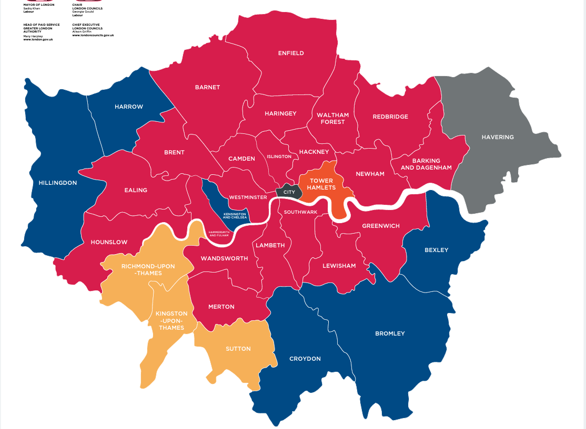
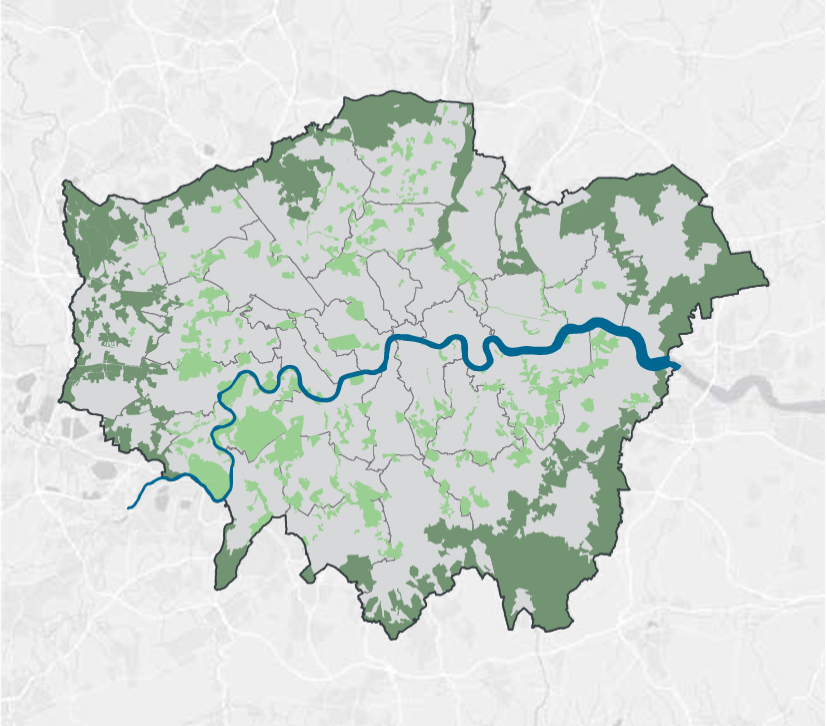
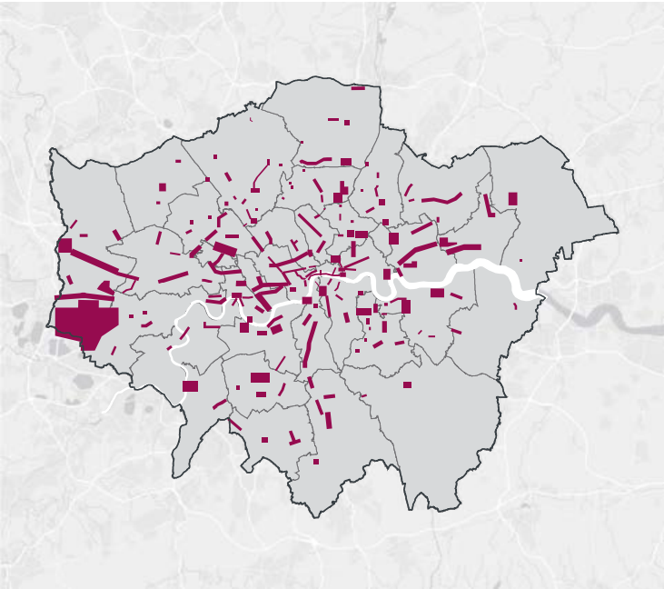
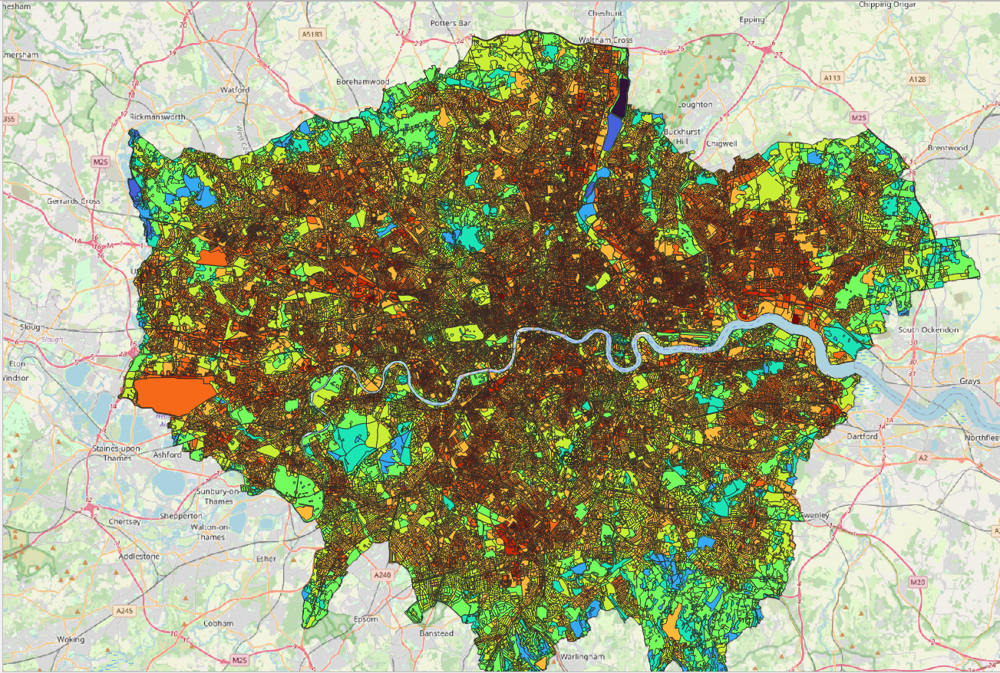
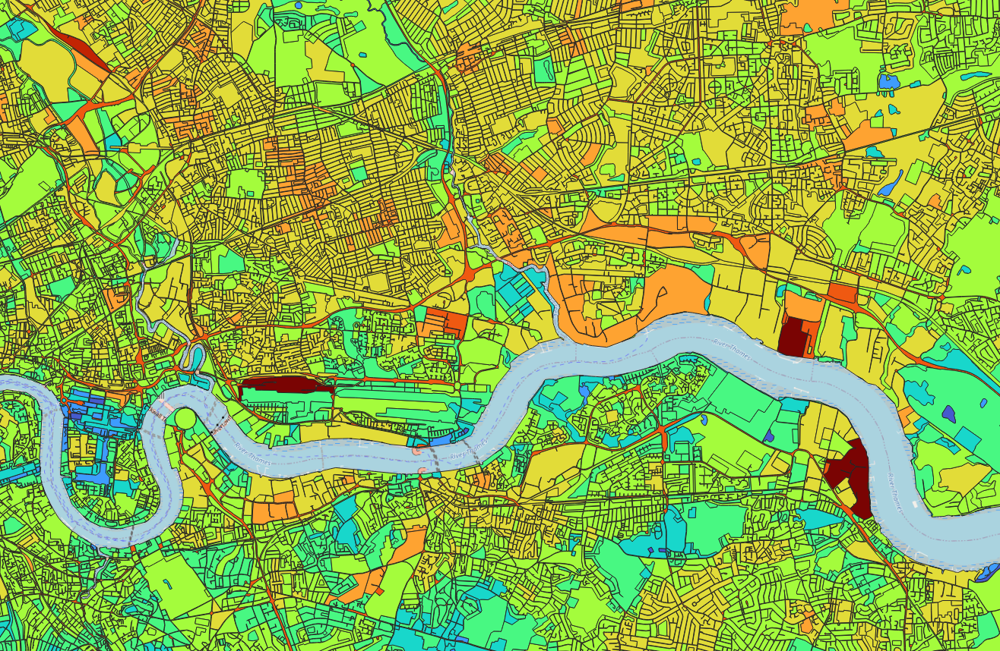
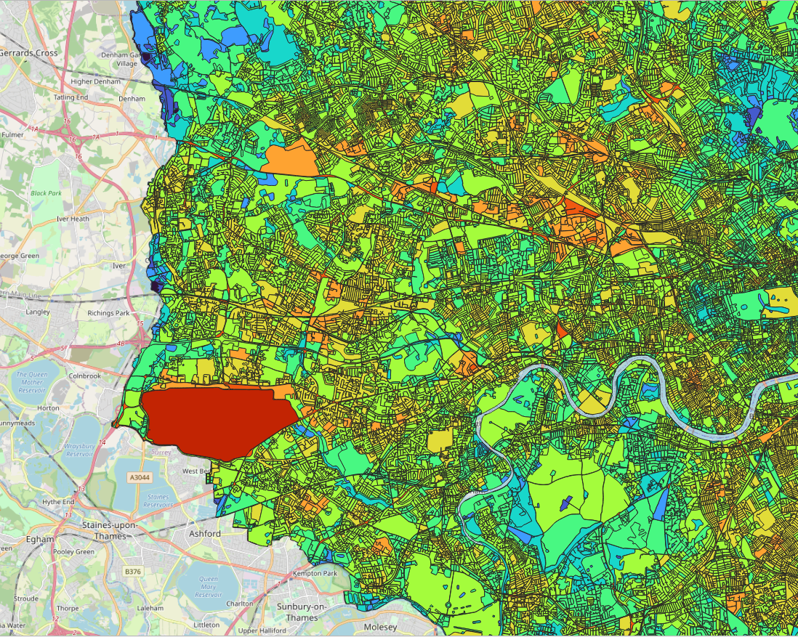
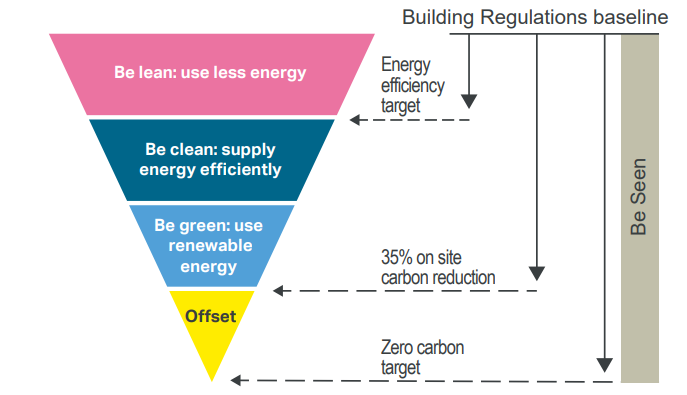
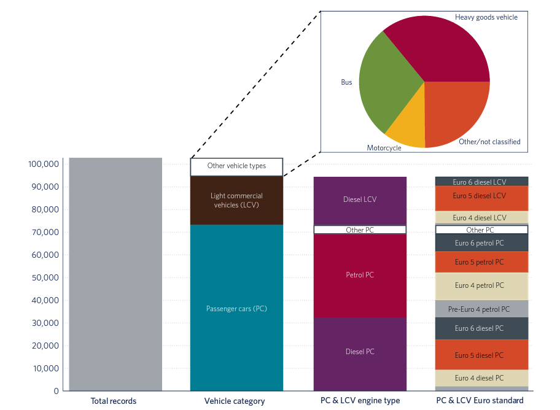
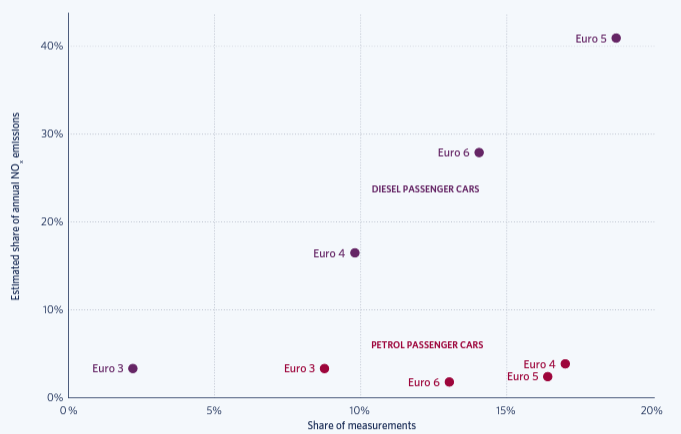

5 week4: Policy
city plan and application of remote sensing for London
5.1 Summary
5.1.1 Current city layout of London
General speaking, London has a complex city layout that has evolved over centuries of growth and development. Until 2022, London was a sprawling metropolis, with a mix of historic and modern buildings, a well-developed transport network, and a diverse range of neighborhoods and communities.
- main functional areas The city is divided into 32 boroughs, each with its own unique character and amenities. For example, the center of London is home to many of the city’s famous landmarks and tourist attractions, including Buckingham Palace, the Tower of London, and the London Eye. The West End is known for its theaters, shopping, and nightlife, while the South Bank is home to many cultural institutions, including the National Theatre and the Tate Modern art museum.

- development direction: London is surrounded by green belt land (dark green section), which serves to limit the expansion of the city and protect the surrounding countryside. Despite this, the city continues to grow, with new developments and communities being built on the outskirts of London, particularly in the east and southeast of the city. The light green section represents the areas of London that are still to be developed.

- transportation: The transport network in London is extensive and includes an underground railway system (the London Underground), a network of bus routes, and overground rail services. London is also well connected to the rest of the UK and Europe, with several major airports, including Heathrow and Gatwick, and international train services from St Pancras station.
It includes several kinds of means of transport as following: London Underground (Tube): The London Underground is a rapid transit system that operates throughout the city and is one of the oldest and largest metro systems in the world. It comprises of 11 lines and serves 270 stations.
Buses: London has one of the largest urban bus networks in the world, with over 8,000 buses serving over 700 routes. Buses are an important mode of transportation for many Londoners and are a cost-effective way to travel around the city.
Overground: London Overground is a network of suburban rail services that operates across Greater London and the surrounding areas. It connects with the London Underground and National Rail services, providing a comprehensive rail network for Londoners.
Taxis and Private Hire Vehicles: London is famous for its black cabs, which can be hailed on the street or at taxi ranks. Private hire vehicles, also known as minicabs, must be pre-booked and are widely available throughout the city.
Cycling: London has a growing number of cycle lanes and cycle-friendly streets, and there are several schemes in place to encourage cycling, including the Santander Cycles bike hire scheme.
Walking: London is a walkable city, and many areas are easily accessible on foot. There are also several pedestrian-only zones, making it easier and safer for people to walk around the city.
5.1.2 development goals and policies in the future
Provide housing for a growing population: The plan aims to deliver new homes to meet the growing demand for housing in the city.
Promote economic growth: The plan aims to support London’s economy by creating new jobs, promoting investment, and supporting businesses. improve the efficiency and resilience.
Improve transport and connectivity: The plan aims to make it easier for people to travel around London and connect with the rest of the country and beyond.
Enhance the environment: The plan aims to improve the quality of the natural and built environment in London and to protect the city’s green spaces.
Promote social inclusion and equality: The plan aims to ensure that everyone in London has the opportunity to participate in the city’s social, economic, and cultural life.
5.1.3 Problems during city development of London
Housing Shortage: London has faced a persistent shortage of affordable housing, particularly in the central areas of the city. This has led to high levels of homelessness and housing insecurity, and has put pressure on the city’s social and healthcare systems. In addition, with the CPI and cost of living growth, it becomes more and more difficult for foreigners to live there, high rental, high energy cost, high transportation cost make them leave.
Congestion and Traffic: London’s rapid growth has led to increased traffic congestion, air pollution, and noise pollution. The city has struggled to keep up with the demands of its growing population and has faced challenges in improving the efficiency and sustainability of its transportation network.

Inadequate Infrastructure: London’s infrastructure has struggled to keep pace with the city’s growth, and there have been significant challenges in providing adequate public transportation, water and sewage services, and waste management facilities.
Environmental Degradation: London’s rapid growth has led to the degradation of its natural environment, including the loss of green spaces, air and water pollution, and the degradation of its soil and vegetation.
Social Disparities: London is a city with significant social and economic disparities, with some areas experiencing high levels of poverty, crime, and social exclusion, while others are more affluent and economically prosperous.
Historical Preservation: London is a city with a rich history and cultural heritage, and there have been challenges in balancing the need to preserve its historical buildings and monuments with the demands of a modern, growing city.
5.2 Application
5.2.1 Case 1: Summer heat spots from Landsat8 Thermal satellite data
Landsat8 satellite can provide a high-resolution thermal data and use as a basis for mapping the spatial distribution of Great London Area (GLA) surface temperatures and identifying those urban hotspots. This dataset is a count of surface temperatures from the summer months (June, July and August only) between 2016 and 2020, obtained from landsat8 thermal infrared imagery. In addition to the five-year average temperature for the area, the dataset also includes maximum and minimum temperatures and standard deviations to provide a visual representation of the magnitude and range of temperature changes over the five-year period in GLA.
Higher temperatures tend to occur in densely populated areas.

As can be seen from the map, the population is predominantly distributed between the north and south banks of the Thames, with the population on the north bank being greater than that on the south bank. The green belt around London can be seen more clearly on the map. The population of the north bank is more dense in the east than in the west. The density of population is high from the City of London all the way north, and is also high in north-east London, decreasing further east. Conversely, the centre of the South Bank is more densely populated, while the east and west are less dense. If Greater London continues to expand, the north-east and south-east would be a better choice.
Take the City of London for example, some areas saw the highest temperatures compared with the whole city, such as Euston Station east of Regent’s Park, and most of the high heat areas were in high-traffic areas such as train stations, tube stations, shopping malls and airports.

In addition to population density affecting surface temperatures, industry, airport also have an impact on surface temperatures, with the highest surface temperatures occurring in the five year period shown below at the Dagenham engine plant, ocado customer fullfilment centre, ExCel International Convention and Exhibition Centre along the Thames in east London, and Heathrow Airport to the west.


Knowing the temperature changes will help to understand the population distribution in GLA, which in turn will allow transport to be organised to develop faster and more accessible transport in dense areas, to develop infrastructure and to reduce the pressure on existing transport (for example, the central line passes through areas of great population density, and the central line is the oldest tube in London and still the busiest in London). The central line, for example, is the oldest and still the busiest tube in London, so it has to take on a lot of traffic pressure). In addition, more polluting facilities such as factories can be relocated to less populated areas. Knowing the distribution of temperatures can also control the creation of high temperature situations, such as the rare high temperatures in the London area in the summer of 2022.
5.2.2 case 2: Remote sensing of motor vehicle emissions in London
energy hierarchy policy and target of London city plan * be lean: less energy used and energy demand management * be clean: fully use local energy (secondary energy explicit) and use energy more efficiently and cleanly. * be green: add the opportunity for using renewable energy, provide producing, storing energy on-site * be seen: monitor, verify and report on energy performance.

In response to a call for collaboration between the Mayor of London and the TRUE initiative, carbon emissions from passing vehicles were tested using remote sensing technology at nine sites across Greater London between 2017 and 2018, with carbon emissions data recorded for over 100,000 vehicles, The experiment focused on petrol and diesel vehicles in the London area, with vehicle types including passenger cars, buses, light passenger vehicles, trucks and motorbikes, and measured emissions of carbon oxides and nitrogen oxides.
The remote sensing equipment used for the experiments was the Opus AccuScan RSD5000, which was the first to test exhaust gases in three main ways:
The device emits infrared and ultraviolet light velocities that pass through vehicle emissions, measuring the attenuation of these beams, instant vehicle emissions, the device measures nitrogen oxides and carbon oxides, opacity is measured as a proxy for respirable particulate matter, the device emits a frequency of 200 Hz and can measure 100 times in 0.5 seconds.
Measurement of the instantaneous acceleration of the vehicle as a measure of the engine load, which is related to the instantaneous emission rate.
One camera is responsible for photographing the vehicle licence plate for database comparison to determine its model, displacement standard.
The general conditions of testing vehicles

Result:
- Diesel passenger cars are six to seven times more likely to emit nitrogen oxides than petrol passenger cars.

- Euro5 and Euro6 diesel engines emit significantly more nitrogen oxides than Euro3 and Euro4, while petrol engines emit the similar amount

Therefore, petrol vehicles outperform diesel vehicles and to achieve carbon emission reductions, the number of diesel vehicles needs to be limited and Euro3 or Euro4 diesel engines should be promoted instead of Euro5 and Euro6.
5.3 Reflection
In this week, I learned a lot about London city plan in future decades, first the current situation of London development, then the problems of city development, the target city plan, and use several cases to demonstrate how remote sensing technology can help with city plan.
First, use the temperature heat spot case to find the pattern of London population distribution, this helps to enhance the efficiency and effectiveness of London land usage. Then, use a kind of remote sensing equipment to measure the carbon emission of different vehicles, and come up with some constructive advice to acheive lower carbon target.